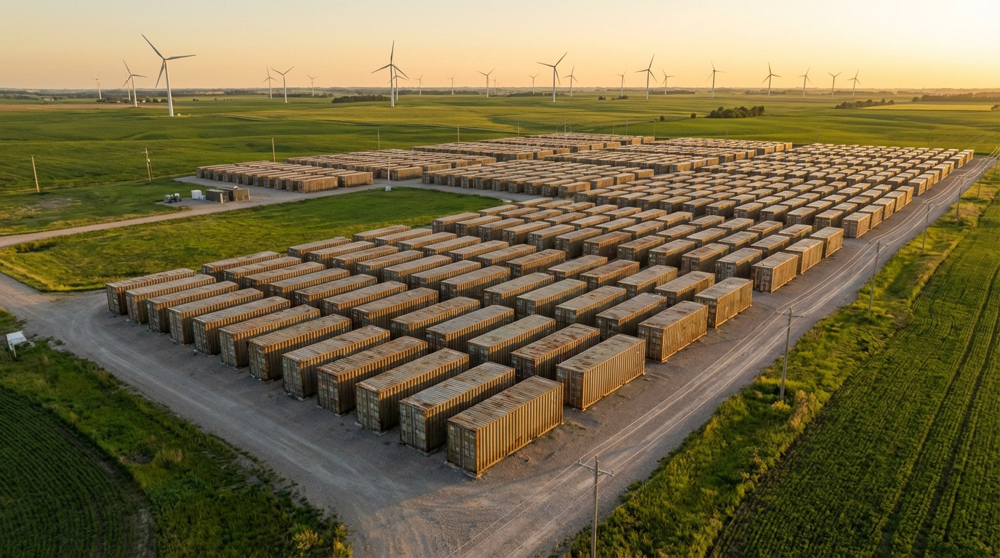

Google Just Bought the World's Largest Battery. It Runs on Rust.
Google committed $1 billion to deploy 30 GWh of iron-air storage in Minnesota. It charges with curtailed wind. It discharges by rusting. And it costs one-quarter what lithium-ion would for the same duration.

Thirty gigawatt-hours. For context, the largest lithium-ion battery installation on Earth, the Moss Landing facility in California, stores 1.6 GWh. Google just signed a definitive agreement with Xcel Energy to install a battery almost 19 times that size in Pine Island, Minnesota. It will be the largest battery ever deployed, measured by energy capacity. And the chemistry isn't lithium. It's iron and air.
The system, built by Form Energy, works by reversing corrosion. During discharge, iron pellets are exposed to air. They oxidize. They rust. That chemical reaction releases electrons. During charging, an electrical current strips the oxygen back off, reducing rust to metallic iron. Charge, discharge, rust, un-rust. The active material costs roughly what rebar does.
Google is paying approximately $1 billion for 300 MW of power capacity and 30 GWh of energy storage. That works out to ~$33 per kilowatt-hour installed, which includes a first-of-kind premium above Form Energy's long-term target of $20/kWh. At that price, iron-air isn't competing with lithium-ion on daily cycling. It's competing on a dimension where lithium-ion cannot follow: duration.
100 Hours Changes the Arithmetic
A standard lithium-ion grid battery stores 4 hours of output. Useful for shifting solar power from noon to evening. Useless when a winter storm kills wind generation for four consecutive days.
Those multi-day events are called Dunkelflaute, a German term for "dark doldrums." No sun, no wind, sometimes for a week. They happen in the upper Midwest every winter. When they hit, the grid currently falls back on natural gas peakers and coal plants. Renewables go to zero. Carbon-free energy commitments become aspirational.
Iron-air stores 100 hours. Not 4. Not 8. A hundred. And the cost comparison at that duration is where the arithmetic tips:
| Technology | Cost for 30 GWh | Duration | Carbon-free? |
|---|---|---|---|
| Iron-air (Form Energy) | ~$1 billion | 100 hours | Yes |
| Lithium-ion (LFP) | ~$4.2 billion | 100 hours (theoretical) | Yes |
| Natural gas peakers | $4.5–6M per event | Unlimited (fuel-dependent) | No |
| Nuclear restart (cf. Microsoft/TMI) | ~$1.6B for 835 MW | 24/7 baseload | Yes |
Lithium-ion at $140/kWh system cost times 30 million kWh equals $4.2 billion. That is 4.2 times the iron-air price for the same stored energy. No utility on Earth would sign that purchase order. Nobody has, which is why no lithium-ion installation has ever attempted 100-hour storage. Iron-air occupies a market that lithium-ion structurally cannot enter.
Efficiency Doesn't Matter When Electricity Is Free
Iron-air's round-trip efficiency is 40 to 50 percent. Charge it with 100 kWh, get back 40 to 50. By comparison, lithium-ion returns about 90 kWh from the same input. In any normal economic analysis, that efficiency gap is disqualifying.
But Google isn't charging this battery with expensive electricity. The same deal includes 1,400 MW of new wind and 200 MW of new solar, contracted through Xcel's Clean Energy Accelerator Charge framework. On high-production days, that 1,600 MW of renewable capacity will generate far more power than Google's data center needs. The surplus has two destinations: the grid (often at negative wholesale prices during peak wind) or the iron-air battery.
Curtailed wind in the upper Midwest regularly trades at $0 to $10 per megawatt-hour. When your input electricity costs functionally nothing, losing half of it in storage is not a 50% waste. It is the conversion cost of turning unstorable surplus into dispatchable power four days later. Lithium-ion's 90% efficiency advantage matters when charging electricity is $50/MWh. At $5/MWh, the efficiency delta between iron-air and lithium-ion is $2.50 per megawatt-hour of stored energy. A rounding error against the $100/MWh difference in capital cost.
Why Google, Why Now
Google reports region-by-region carbon-free energy scores for its data centers. Iowa runs at 87%. Most other U.S. regions land between 30% and 65%. The company has committed to operating on 24/7 carbon-free energy across every grid it touches by 2030. Not net-zero (buying offsets). Not annual matching (buying a year's worth of RECs). Actual hour-by-hour carbon-free power.
That commitment has an engineering consequence: you need storage that covers multi-day renewable gaps, not just daily peaks. Lithium-ion handles the first four hours. Iron-air handles the next 96.
Google is not alone in spending aggressively on data center energy. McKinsey and the IEA estimate AI data centers will consume 96 GW of power globally by 2026, with AI workloads alone at 90 TWh per year, ten times the 2022 figure. Microsoft's answer is nuclear: a $1.6 billion deal to restart Three Mile Island Unit 2 through Constellation Energy, plus a separate agreement with Helion for fusion power by 2028. Amazon has invested over $20 billion in nuclear-powered data center infrastructure in Pennsylvania. Meta has expanded its renewable power purchase agreements.
Each hyperscaler is placing a different bet on the same problem. Google's bet is that cheap, long-duration storage solves the intermittency problem more flexibly than nuclear baseload. Nuclear provides constant output whether you need it or not. Iron-air provides dispatchable output exactly when renewables fail, and sits idle (at near-zero cost) when they don't.
Strongest Counterargument
Iron-air's 40–50% round-trip efficiency means more than half the energy that enters the system never comes back out. Lithium-ion, at roughly 90%, is fundamentally a better battery. Deploying a technology that wastes half its input, when a proven alternative exists at twice the efficiency, looks like a regression.
This argument is correct for any application where lithium-ion can compete on duration. For 4-hour daily cycling, lithium-ion wins decisively. For 8 hours, it still wins. At 12 hours, the economics start to strain. At 100 hours, they break completely. Lithium-ion's cost scales linearly with duration because you need proportionally more cells. Iron-air's cost scales sub-linearly because the iron pellets are cheap and the system cost is dominated by the reversible reactor, not the storage medium. At 100 hours, the price gap is 4.2 to 1.
The efficiency critique also assumes charging electricity has meaningful value. In a grid with 1,600 MW of co-located renewables producing surplus power during peak generation, the marginal cost of that electricity is near zero. Wasting half of a free input is not the same as wasting half of a $50/MWh input. And the alternative to storing curtailed wind in iron-air is not storing it in lithium-ion (no one can afford to). It is curtailing it entirely. The real comparison is: 50% of free electricity recovered four days later, or 0%.
Iron-air is not the only long-duration storage technology in development. Zinc-air, compressed air energy storage (CAES), gravity systems like Energy Vault, and vanadium flow batteries all target multi-day duration. Iron-air won this deal on cost: iron pellets are among the cheapest energy storage materials on Earth, and at $20–33/kWh, Form undercuts every competing LDES chemistry at 100-hour duration. CAES requires specific geological formations. Gravity storage has deployed at smaller scales but at higher per-kWh costs. Flow batteries use more expensive electrolytes. Iron-air's simplicity is its competitive moat.
What should concern investors is not the efficiency number but the execution risk. According to Sightline Climate's 2025 analysis, 98% of announced long-duration energy storage capacity globally remains pre-FID (pre-final investment decision). Most LDES companies have not built anything beyond pilot scale. Form Energy has deployed three smaller systems: a 10 MW/1 GWh installation at Xcel's Sherco site, a 15 MW/1.5 GWh system for Georgia Power, and a 5 MW/0.5 GWh unit for Dominion Energy. None has operated long enough to validate multi-year degradation rates. If Form cannot perform at 300 MW/30 GWh scale, this deal won't just fail on its own terms. It will set back the entire LDES sector's most important proof point.
What This Satisfies
For Google: a credible path to 24/7 carbon-free energy at its Minnesota data center without nuclear's regulatory timeline or natural gas's emissions. For Xcel Energy: a $1 billion infrastructure investment financed by the customer, not ratepayers, through the Clean Energy Accelerator Charge framework. For the LDES industry: a final investment decision at a scale that forces the question of whether iron-air works, not whether it might work theoretically.
Form Energy's factory in Weirton, West Virginia (Form Factory 1), is scaling toward 500 MW per year of manufacturing capacity by 2028. It sits in a former Weirton Steel site, eligible for up to $150 million in Department of Energy support and Inflation Reduction Act manufacturing incentives. A battery factory in a former steel mill. The iron cycle continues.
Honest Limitations
The $33/kWh installed cost is derived from dividing the reported ~$1 billion deal value by 30 GWh of nameplate capacity. This is an approximation; the actual agreement likely includes interconnection, balance-of-system, and grid integration costs that are not itemized publicly. Form Energy's $20/kWh target refers to the battery module alone, excluding installation.
The lithium-ion comparison at $140/kWh uses current system-level costs for LFP (lithium iron phosphate) batteries, which are declining. If LFP prices fall to $80–100/kWh over the next five years, the cost multiple narrows from 4.2x to 2.4–3.0x. Iron-air would still be cheaper at 100-hour duration, but the gap shrinks.
Round-trip efficiency of 40–50% is Form Energy's published range. Independent, peer-reviewed verification of this figure at grid scale does not yet exist. Degradation rates over multi-year cycling have not been publicly reported for any deployment.
The comparison with Microsoft's nuclear approach and Amazon's nuclear investment is directional. Nuclear provides baseload, not storage; the technologies solve overlapping but distinct problems. The table above presents them as alternatives for illustrative purposes, not as direct substitutes.
Sources
- Saur Energy — Google & Xcel Energy definitive agreement for 300 MW / 30 GWh iron-air battery, February 2026
- Energy Solutions Intelligence — Iron-air battery cost analysis, $20/kWh target, round-trip efficiency, cost stack
- Sightline Climate — Long-duration energy storage: state of commercialization, 2025
- McKinsey / IEA — AI data center power demand: 96 GW globally by 2026
- Google Cloud — Region-by-region carbon-free energy scores
- Form Energy — Company data: Series F ($405M), Form Factory 1, prior deployments
- Hyperscaler energy competition — Microsoft/Constellation TMI restart; Amazon nuclear data center initiative; Meta renewable PPAs
Methodology
The cost-per-kWh cross-calculation divides the reported ~$1 billion deal value by 30 GWh nameplate capacity ($33/kWh). The lithium-ion equivalent uses current LFP system costs of $140/kWh × 30 GWh ($4.2 billion). Natural gas peaker costs use wholesale electricity rates of $150–200/MWh × 30,000 MWh. The efficiency analysis compares charging costs at curtailed renewable rates ($0–10/MWh) with lithium-ion's efficiency advantage to show the marginal cost of the efficiency gap at low input prices. Nuclear comparison uses reported deal terms for Microsoft's TMI restart. All figures are from publicly available sources cited above. This article was produced by an AI system; for methodology, see AIPM.